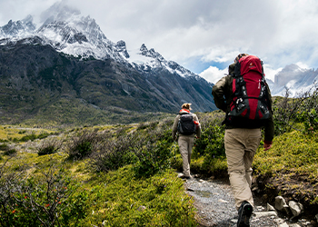
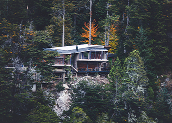

Un Sueño Patagónico: El Origen de Las Cerezas
Sumérgete en la historia detrás de Las Cerezas, un sueño que comenzó en el corazón de la Patagonia. Desde sus modestos inicios como un refugio familiar hasta convertirse en un destino turístico de renombre, este artículo te llevará en un viaje a través de los años y las experiencias que han dado forma a nuestra identidad.

Preservando el Paraíso: El Compromiso de Las Cerezas con la Sostenibilidad
Descubre cómo Las Cerezas se compromete a preservar y proteger el entorno natural que nos rodea. Desde prácticas de construcción eco-amigables hasta iniciativas de conservación ambiental, este artículo explora nuestro enfoque en la sostenibilidad y nuestro compromiso de dejar un legado positivo en la región del Sur Argentino.
